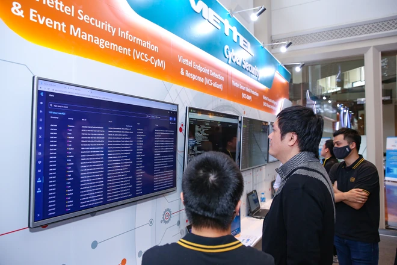

Cùng với sự thúc đẩy mạnh mẽ của Bộ Thông tin và Truyền thông, hiện tỷ lệ chủng loại sản phẩm an toàn, an ninh mạng nội địa đã đạt 91% và sẽ đạt 100% vào năm 2021.
“Phát triển và làm chủ hệ sinh thái sản phẩm an toàn thông tin mạng Việt Nam phục vụ Chính phủ điện tử, đô thị thông minh và hệ thống thông tin quan trọng quốc gia” là một trong những nhiệm vụ cụ thể Bộ Thông tin và Truyền thông được Chính phủ giao, theo Nghị quyết 01 ngày 1/1/2020 của Chính phủ về nhiệm vụ, giải pháp chủ yếu thực hiện kế hoạch phát triển kinh tế - xã hội và dự toán ngân sách nhà nước năm 2020.
Chỉ thị 01 về định hướng phát triển ngành Thông tin và Truyền thông năm 2020 cũng nêu rõ: “Hệ sinh thái các sản phẩm an toàn an ninh mạng phải do chính doanh nghiệp Việt Nam xây dựng và làm chủ để phục vụ Chính phủ điện tử, đô thị thông minh và các hệ thống thông tin quan trọng quốc gia. Lực lượng an toàn an ninh mạng có trách nhiệm bảo vệ sự thịnh vượng của quốc gia trên không gian mạng.”
Xây dựng nền công nghiệp an toàn an ninh mạng hùng mạnh
Trong phát biểu tại hội thảo quốc tế Ngày An toàn thông tin Việt Nam 2020 ngày 2/12, Bộ trưởng Bộ Thông tin và Truyền thông Nguyễn Mạnh Hùng đã một lần nữa nhấn mạnh sứ mệnh của an toàn, an ninh mạng Việt Nam là bảo vệ sự thịnh vượng của Việt Nam trên không gian mạng.
Bộ trưởng chỉ rõ trách nhiệm bảo vệ sự thịnh vượng của Việt Nam trên không gian mạng nằm trên vai các doanh nghiệp an toàn an ninh mạng. Đây cũng là trách nhiệm của Hiệp hội An toàn thông tin Việt Nam. “Muốn làm tốt việc này thì chúng ta phải làm chủ hệ sinh thái các sản phẩm an toàn an ninh mạng. Chúng ta phải xây dựng một nền công nghiệp an toàn an ninh mạng hùng mạnh,” Bộ trưởng Hùng khẳng định.
Cũng tại hội thảo, ông Nguyễn Thành Phúc, Cục trưởng Cục An toàn thông tin (Bộ Thông tin và Truyền thông) đã chia sẻ về kết quả phát triển Hệ sinh thái an toàn an ninh mạng “Make in Vietnam” trong thời gian vừa qua.
Ông Phúc cho biết Bộ Thông tin và Truyền thông quan điểm rằng, tự chủ công nghệ, sản phẩm, giải pháp, dịch vụ an toàn an ninh mạng là giải pháp căn cơ để bảo đảm an toàn an ninh mạng Việt Nam. Phát triển hệ sinh thái an toàn an ninh mạng Việt Nam chính là tiền đề phát triển nền công nghiệp an toàn an ninh mạng Việt Nam. Mỗi cơ quan, doanh nghiệp đều có ít nhất một doanh nghiệp, tổ chức an toàn an ninh mạng chuyên nghiệp trong nước để bảo đảm an toàn an ninh mạng cho mình.
Từ cuối năm 2019 đến nay, Bộ Thông tin và Truyền thông đã tập trung thực hiện 4 hành động lớn để phát triển Hệ sinh thái an toàn an ninh mạng “Make in Vietnam” bao gồm: Thúc đẩy hoạt động của Liên minh phát triển Hệ sinh thái sản phẩm an toàn an ninh mạng Việt Nam; xây dựng, ban hành các tiêu chí kỹ thuật, tổ chức đánh giá chất lượng các sản phẩm, dịch vụ an toàn an ninh mạng; thúc đẩy nhu cầu thị trường an toàn an ninh mạng Việt Nam; truyền thông, giới thiệu sản phẩm cho hệ sinh thái sản phẩm an toàn an ninh mạng Việt Nam.
['Việt Nam phải khẳng định chủ quyền và sự thịnh vượng trên mạng']
Với việc triển khai hàng loạt nội dung công việc theo 4 nhóm hành động trên, đến nay hệ sinh thái sản phẩm an toàn an ninh mạng “Make in Vietnam” đã có những bước phát triển mạnh mẽ, rõ nét. Điều này được thể hiện ở tỷ lệ chủng loại sản phẩm nội địa tăng nhanh; tỷ lệ doanh thu sản phẩm nội địa so với nước ngoài cũng tăng và sự tăng trưởng doanh thu sản phẩm an toàn thông tin nội địa cũng tăng.
Cụ thể, theo số liệu thống kê của Cục An toàn thông tin, hiện tại, tỷ lệ chủng loại sản phẩm an toàn thông tin nội địa đã đạt 91%, tăng gần 1,7 lần so với năm 2019 và tăng hơn 18 lần so với năm 2015.
Cùng với đó, tỷ lệ doanh thu sản phẩm nội địa so với nước ngoài đã tăng từ 18% năm 2015 lên 39% vào năm 2019 và hiện nay đã đạt 45%. Tỷ lệ này được kỳ vọng sẽ tiếp tục tăng lên trong năm 2021 và các năm tiếp theo.
Thống kê của Cục An toàn thông tin cho thấy, bên cạnh sự tăng trưởng về chủng loại sản phẩm, doanh thu an toàn thông tin cũng đã liên tục trong những năm gần đây: tăng từ hơn 400 tỷ đồng năm 2016 lên mức 1.490 tỷ đồng năm 2019 và dự kiến sẽ đạt khoảng 1.900 tỷ đồng trong năm 2020.
“Doanh thu an toàn thông tin năm 2020 đã tăng tới trên 50%. Kết quả này phần nào cho thấy hệ sinh thái sản phẩm an toàn an ninh mạng Việt Nam phát triển mạnh,” đại diện Cục An toàn thông tin chia sẻ.
Hệ sinh thái sản phẩm an toàn an ninh mạng “Make in Vietnam” sẽ đạt 100% vào 2021
Ông Nguyễn Thành Phúc cũng thông tin với các đại biểu về các hoạt động sẽ được Bộ Thông tin và Truyền thông tập trung triển khai trong thời gian tới để đẩy mạnh phát triển hệ sinh thái sản phẩm an toàn an ninh mạng “Make in Vietnam.”
Trước hết, Bộ Thông tin và Truyền thông sẽ tiếp tục hoàn thiện hệ thống cơ chế, chính sách như xây dựng Đề án phát triển ngành công nghiệp an toàn an ninh mạng; xây dựng, hoàn thiện dự thảo Quyết định về mua sắm máy móc, thiết bị bảo đảm an toàn thông tin để thúc đẩy nhu cầu sử dụng các sản phẩm an toàn an ninh mạng trong nước.

Bên cạnh việc tiếp tục thúc đẩy để nâng tỷ lệ chủng loại sản phẩm an toàn an ninh mạng nội địa lên đạt 100% trong năm 2021, Cục An toàn thông tin cũng đặt mục tiêu đưa giá trị thị trường an toàn an ninh mạng năm 2021 tăng khoảng 30% so với năm 2020.
“Chúng tôi cũng sẽ có những thúc đẩy để tăng tỷ lệ chi cho an toàn an ninh mạng năm 2021 tăng 3-4 lần so với năm 2020,” đại diện Cục An toàn thông tin chia sẻ.
Tiếp tục hỗ trợ đánh giá sản phẩm của doanh nghiệp nội địa, thời gian tới Bộ Thông tin và Truyền thông (trực tiếp là Cục An toàn thông tin) sẽ xây dựng Hệ thống đánh giá, kiểm định an toàn thông tin theo tiêu chuẩn quốc tế để có thể đánh giá khoảng 300-500 phiên bản sản phẩm an toàn thông tin trong giai đoạn 2021-2025. Việc này được nhận định sẽ rút ngắn đáng kể thời gian đánh giá, đồng thời giúp tiết kiệm chi phí cho các doanh nghiệp an toàn an ninh mạng Việt Nam.
Ngoài ra, thời gian tới, Cục An toàn thông tin cũng sẽ hỗ trợ đánh giá, công bố, khuyến nghị sử dụng sản phẩm, dịch vụ an toàn thông tin nội địa, tổ chức các Chiến dịch truyền thông Hệ sinh thái sản phẩm an toàn an ninh mạng Make in Vietnam./.